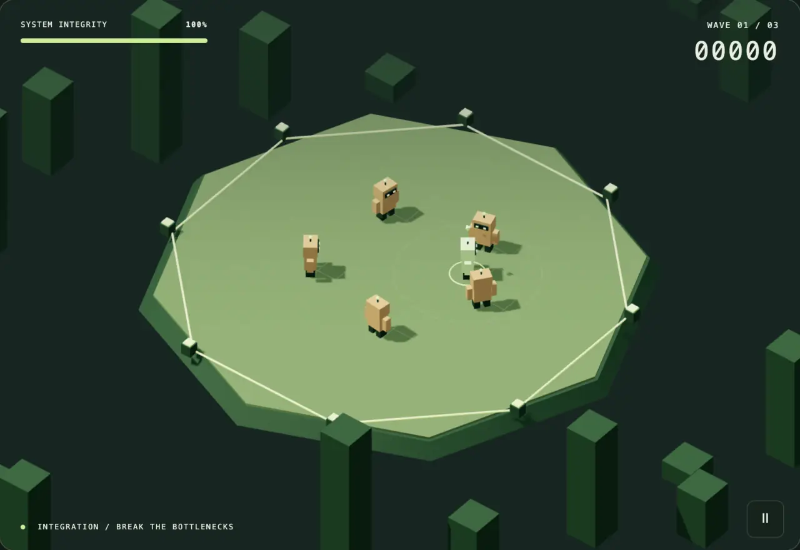

KamiTrack
Android fitness app, built solo
Step and run tracking, self-completing tasks, group chat with games, and a social feed. Designed, built and shipped end to end by one person, including the foreground location service.
Portfolio of work Rev. October 2026
Senior programmer and system analyst. I turn real-world processes into software people actually use, from the factory floor to the app in your pocket.
Systems in production for Malaysian government agencies, alongside the things I build on my own time.
Sistem Pengurusan Aset Komunikasi dan Elektronik
Asset management for communications and electronics equipment: registry, servicing and full lifecycle records.
Sistem Pengurusan Komputer Bersepadu, Pasukan Udara Tentera Darat
Integrated computer and equipment management for an army air corps: inventory, servicing and reporting.
Fleet Management System
Fleet management across web and mobile: vehicles, bookings, journeys and live location tracking.
Android fitness app, built solo
Step and run tracking, self-completing tasks, group chat with games, and a social feed. Designed, built and shipped end to end by one person, including the foreground location service.
Server hardening review
Security assessment of a RunCloud-managed stack: configuration, access control and exposure.
Flutter interactive app
An interactive Flutter app built to work through game logic and state handling in Dart.
API design & documentation
Documented and structured a Laravel API surface with Swagger, covering contracts and versioning.
A small 3D game I built as a second way to show the work. You pilot a robot through three waves of bugs with an API pulse, a Flutter dash and a DevOps shield, each tied to the skills behind it.
3 waves · keyboard and touch · runs in the browser, no install
Play Systems Arena
I build systems that production floors depend on.
Seven years across manufacturing, semiconductor and government work has taught me that most software problems start as process problems. So I spend as much time on the floor with engineers and supervisors as I do in the editor, gathering requirements and turning them into workflows people actually use.
That's meant configuring in-house MES/ERP systems and Electronic Data Capture, wiring invoicing straight into on-premise SAP Business One, running full UAT and FAT deployment cycles, and shipping Laravel/Vue platforms and Flutter apps on top. I work efficiently with minimal supervision, and just as comfortably inside a team.
| Years in industry | 7+ |
|---|---|
| Systems shipped | 20+ |
| Government platforms live | 3 |
| Languages & frameworks | 8 |
Senior Programmer at YHCM Sdn Bhd in Wangsa Maju, KL. Leading the design of enterprise-grade applications, mentoring junior developers through code review, and streamlining how the team ships.
What I reach for, grouped by what it's for.
| Area | Tools |
|---|---|
| Languages Core and daily driver | C++, C#, PHP, Java, Dart, Python, HTML/CSS, JavaScript |
| Frameworks Web and mobile | Laravel, Android Studio, Flutter, Filament, Vue 3, Swift |
| Data Storage and reporting | MySQL, MS SQL Server, PostgreSQL, Supabase, Redis, MongoDB, phpMyAdmin |
| Platform & DevOps Ship, host, keep it up | Linux / open source OS, Docker, GitLab CI/CD, GCP, RunCloud, VMware vSphere, Hyper-V, Nutanix, Veeam, Cisco |
| Enterprise & analysis The domain half of the job | SAP Business One, MES/ERP, Electronic Data Capture, B2B modules, UAT/FAT cycles, requirements gathering |
| Data science Trained 2022–2023 | Python, SQL, data visualisation, Visual Studio, SQL Server Management |
Bold: the ones I'd be comfortable being tested on tomorrow.
YHCM Sdn Bhd
Lead the design and implementation of scalable, enterprise-grade applications for digital transformation. Mentor junior developers and run rigorous code reviews, work across teams to bring in new technology and tune system performance, and drive process changes that streamline how the team develops and ships.
Laravel, Vue 3, Filament, Docker, code review, mentoring
AIC Semiconductor Sdn Bhd
Gathered requirements straight from production (engineers, supervisors, floor staff) and designed new workflows inside the in-house MES/ERP system, including purpose-built Electronic Data Capture. Built integrations that generated invoices and interfaced them into on-premise SAP Business One, and developed custom B2B modules adapted to country-specific regulatory invoice formats. Ran full UAT and FAT deployment cycles: training-database deploys for IT validation, key-user verification with lead engineers, and final system walk-throughs before mass rollout.
MES/ERP, SAP Business One, EDC, B2B integration, UAT/FAT
RISAU IO Sdn Bhd
Built and maintained Laravel web applications and Flutter apps, staging releases through GitLab. Managed domains on GCP via RunCloud, tuning performance and scalability, and supported the wider team on network and server issues.
Laravel, Flutter, GitLab, GCP, RunCloud
Mesiniaga Sdn Bhd
Ran server infrastructure end to end: remote access, hardware and software troubleshooting, on-site resolution. Worked daily in VMware vSphere, Hyper-V and Nutanix, handled snapshots and recovery with Veeam, and wrote up the resolutions and recommendations that followed.
VMware vSphere, Hyper-V, Nutanix, Veeam, disaster recovery
Aspen Glove Sdn Bhd
Ran glove inspections to keep AQL under 1.5, and put a structured inspection process in place to monitor production quality continuously.
AQL < 1.5, process design, QA
| When | Qualification |
|---|---|
| 2016–2019 | Diploma in Information TechnologyPoliteknik Tuanku Syed Sirajuddin, Perlis. CGPA 3.27 |
| Dec 2022 – Mar 2023 | Data Science with Python & SQLPerak Human Capital Development Center. Visual Studio and MS SQL Server Management; contributed data visualisation and graphical data creation on a training project. |
| 2021 | CompTIA Security+Certification |
| n.d. | Windows Server AdministrationMesiniaga, internal certification |
| n.d. | Cloud ComputingRunCloud certification |
| Language | Level |
|---|---|
| Bahasa Malaysia | Native |
| English | Conversational |
| Bahasa Indonesia | Conversational |
| 日本語 (Japanese) | Learning |
Open to senior engineering and system analyst roles, and to consulting work. Based in Petaling Jaya, willing to relocate.